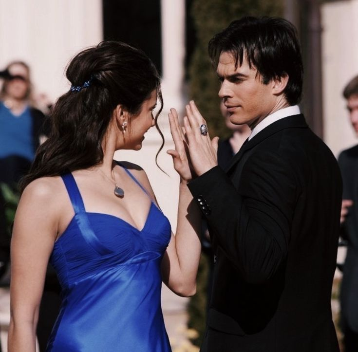

1. When Damon danced with Elena at the Miss Mystic Falls Pageant (Season 1, Episode 19)
This is the cutest scene with Elena and Damon. Damon was saving Elena from embarrassment without Stefan. It was the most amazing scene.
Set in the fictional town of Mystic Falls, Virginia, The Vampire Diaries follows Elena Gilbert, a high school girl reeling from the tragic death of her parents. Her life takes a dramatic turn when she falls for Stefan Salvatore, a mysterious new student who is actually a 162-year-old vampire trying to live peacefully among humans. Their romance is immediately complicated by the arrival of Stefan's dangerous and hedonistic older brother, Damon Salvatore, whose initial goal is to wreak havoc on the town and torture his brother.
The core of the narrative centers on a intense love triangle as Elena finds herself torn between the two brothers, both of whom are deeply connected to her in ways that span across centuries. As they navigate their feelings, the trio is constantly drawn into the dangerous supernatural politics of Mystic Falls, a town with a dark history populated by witches, werewolves, ghosts, and ancient vampire bloodlines. The Salvatore brothers must frequently protect Elena and her friends from supernatural threats, often blurring the lines between hero and villain.
Beyond the romance, the series explores themes of intense loyalty, redemption, and the struggle to maintain humanity while grappling with immortal flaws. As the characters grow older and the threats become more severe, they must confront their own dark impulses and make devastating sacrifices to protect their loved ones. The show evolves from a teen drama into a high-stakes supernatural saga about family, power, and the enduring nature of love.
This is the cutest scene with Elena and Damon. Damon was saving Elena from embarrassment without Stefan. It was the most amazing scene.
On Elena’s 18th birthday, Damon returns the vervain necklace she thought was lost. Though it was a gift from Stefan, Damon selflessly gives it back to her to provide hope while Stefan is missing. It is later revealed in Season 6 that this was the exact moment Elena realized she loved Damon because of his selfless act.
Romantic moments dominate The Vampire Diaries, but few come close to the unfulfilled romance between Klaus and Caroline. They were seemingly perfect for each other, but their moralities kept them apart, as Caroline could not be with someone who had hurt her friends the way Klaus had. Still, the Original did not hesitate to confess his love for her. "He's your first love. I intend to be your last, however long it takes."
Kai ambushes them in a grocery store, intending to kill Damon. Desperate to save him, Bonnie’s magic finally returns, and she uses a pain-infliction spell to take Kai down.